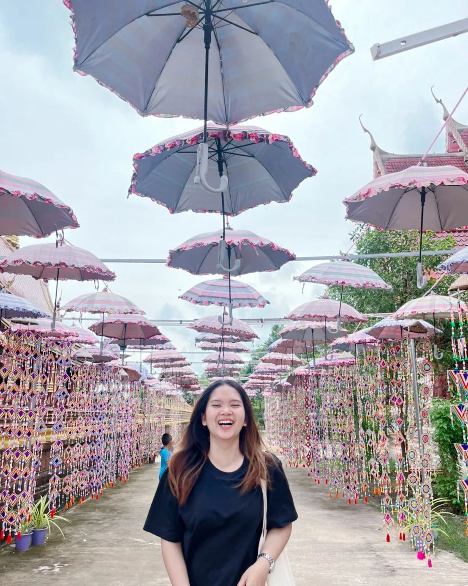

 <!DOCTYPE html>
 <html lang="en">
 <head>
    <meta charset="UTF-8">
    <meta http-equiv="X-UA-Compatible" content="IE=edge">
    <meta name="viewport" content="width=device-width, initial-scale=1.0">
    <title>Document</title>
 </head>
 
 </html>
 <div class="container">
   <div class="card">
     
   </div>

   <div class="panel-group" id="accordion" role="tablist" aria-multiselectable="true">
      <div class="panel panel-default">
        <div class="panel-heading " role="tab" id="headingOne">
          <h4 class="panel-title ">
            <a role="button" data-toggle="collapse" data-parent="#accordion" href="#collapseOne" aria-expanded="" aria-controls="collapseOne">
              <div class="title  btn btn-danger btn-outline btn-lg">About me</div>
            </a>
          </h4>
        </div>
        <div id="collapseOne" class="panel-collapse collapse in" role="tabpanel" aria-labelledby="headingOne">
          <div class="panel-body">
            ชื่อ:นางสาวอาริสา ปัทมา <br>
            ชื่อเล่น:ก้อย 
            อายุ:20 ปี เกิดวันที่ 29 กันยายน 2544 <br> 
            ที่อยู่ปัจจุบัน: 76 หมู่9 ตำบลเหนือ อำเภอเมือง จังหวัดกาฬสินธุ์ 46000 <br> 
            ระดับการศึกษา 
            ชั้นมัธยมศึกษา: โรงเรียนกาฬสินธุ์พิทยาสรรพ์, จังหวัดกาฬสินธุ์ <br> 
            ปัจจุบันศึกษาอยู่ที่สาขาวิทยาการคอมพิวเตอร์และสารสนเทศ ชั้นปีที่ 3 
            คณะสหวิทยาการ มหาวิทยาลัยขอนแก่น วิทยาเขตหนองคาย 43000
          </div>
        </div>
      </div>